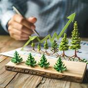

definicion
El desarrollo sustentable (también llamado desarrollo perdurable o desarrollo sostenible) es un modelo de desarrollo de la sociedad que busca conciliar las necesidades económicas e industriales con el equilibrio social y ecológico o medioambiental. Su objetivo es que el desarrollo económico no ponga bajo amenaza la vida en el planeta, para que pueda ser conservado para las generaciones futuras.
galeria



Datos Curiosos
esta tiene como objetivos
- Fin de la pobreza. Implica metas como eliminar la pobreza extrema, reducir la pobreza relativa y garantizar el acceso de la población mundial a las necesidades básicas.
- Agua limpia y saneamiento. Busca lograr el acceso de agua potable a toda la población mundial y proteger este recurso.
- Energía asequible y no contaminante. Busca el desarrollo de energías sustentables que sean accesibles a toda la población.
- Producción y consumo responsables. Implica prácticas como el uso responsable de los recursos, la reutilización y el reciclado y la gestión de desechos.